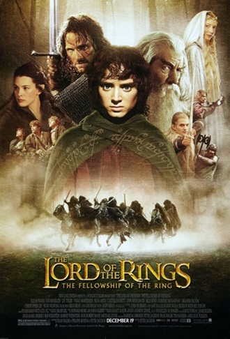
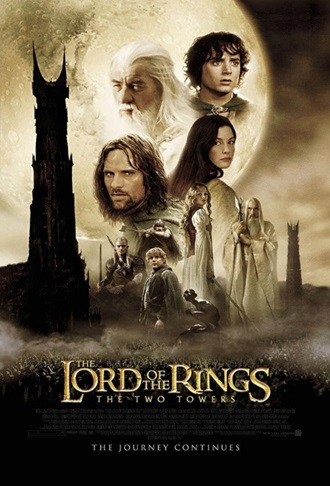
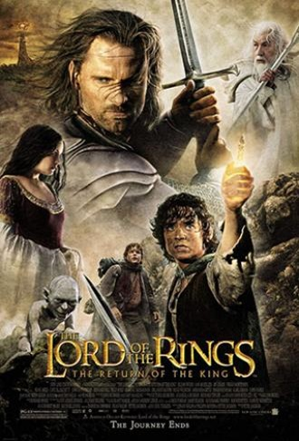

My favorite muvies
-

The Lord of the Rings: The Fellowship of the Ring
The Lord of the Rings: The Fellowship of the Ring is a 2001 epic fantasy adventure film directed by Peter Jackson from a screenplay by Fran Walsh, Philippa Boyens, and Jackson, based on 1954's The Fellowship of the Ring, the first volume of the novel The Lord of the Rings by J. R. R. Tolkien. The film is the first instalment in The Lord of the Rings trilogy. Set in Middle-earth, the story tells of the Dark Lord Sauron, who seeks the One Ring, which contains part of his might, to return to power. The Ring has found its way to the young hobbit Frodo Baggins. The fate of Middle-earth hangs in the balance as Frodo and eight companions (who form the Fellowship of the Ring) begin their perilous journey to Mount Doom in the land of Mordor, the only place where the Ring can be destroyed.
-

The Lord of the Rings: The Two Towers
The Lord of the Rings: The Two Towers is a 2002 epic fantasy adventure film directed by Peter Jackson from a screenplay by Fran Walsh, Philippa Boyens, Stephen Sinclair, and Jackson, based on 1954's The Two Towers, the second volume of the novel The Lord of the Rings by J. R. R. Tolkien. The sequel to 2001's The Lord of the Rings: The Fellowship of the Ring, the film is the second instalment in The Lord of the Rings trilogy. Continuing the plot of the previous film, it intercuts three storylines: Frodo and Sam continue their journey towards Mordor to destroy the One Ring, meeting with and joined by Gollum, the ring's former keeper. Aragorn, Legolas, and Gimli come to the war-torn nation of Rohan and are reunited with the resurrected Gandalf, before fighting against the legions of the treacherous wizard Saruman at the Battle of Helm's Deep. Merry and Pippin escape capture, meet Treebeard the Ent, and help to plan an attack on Isengard, fortress of Saruman.
-

The Lord of the Rings: The Return of the King
The Lord of the Rings: The Return of the King is a 2003 epic fantasy adventure film directed by Peter Jackson from a screenplay by Fran Walsh, Philippa Boyens, and Jackson. It is based on 1955's The Return of the King, the third volume of the novel The Lord of the Rings by J. R. R. Tolkien. The sequel to 2002's The Lord of the Rings: The Two Towers, the film is the final instalment in The Lord of the Rings trilogy. Continuing the plot of the previous film, Frodo, Sam and Gollum are making their final way toward Mount Doom to destroy the One Ring, unaware of Gollum's true intentions, while Merry, Pippin, Gandalf, Aragorn, Legolas, Gimli and the others join forces together against Sauron and his legions in Minas Tirith.